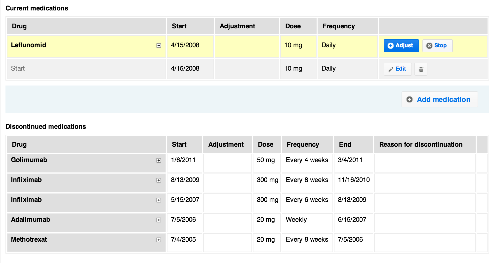

Smart Medical Terms Control
For IT professionals medical documentation is a difficult matter. They are trained to approach problem domains using structured data and love forcing users to enter data in a well defined and structured form. Narrow questions with predefined answers are what IT companies will put on your form if you let them.
Doctors know that medical documentation is too complex to force it into a corset of predefined answers. Each case is special, each patient is different. Highly structured data offers a false promise of accuracy and precision.
An application for electronic health records must therefore allow doctors to document their work in their own words.
Doctors write text in an open and technically (!) not very structured way. This doesn’t mean that some parts of a medical file such as medication and lab results are not suited for a more rigid tabular data structure. But they remain the exception to the rule.

Smart Medical Terms Control (SMTC)
OCQMS doesn’t restrict doctors' freedom in documentation tasks. It allows doctors to write in an open-ended form. In addition to predefined questions (checklist) OCQMS offers an extended text box (open text field) on each form. Entering text into this field isn’t any different from using a text processor (e.g. MS Word) for writing medical reports.
The innovation of OCQMS lays in the Smart Medical Term Control (SMTC). SMTC is a new way to enrich free text with standardized medical terms. It is inspired by hashtags «#» known from Twitter and IRC. When typing «#» within an extended text field, the system will suggest standardized terms from a list of medical terms.
The list can include any medical concept. In our prototype we are using the SNOMED CT core problems list. It includes more than 6’000 medical terms. This list is a subset of terms most useful in documenting and encoding clinical information at a summary level, like a problem list, discharge diagnosis or reason of encounter.
SMTC for Reports
On the output side SMTC offers a way to visually «scan» medical reports (discharge summaries) for different dimensions. The SNOMED system of medical terms consists of 19 dimension or axes. In the reports section OCQMS provides a smart filter for the most relevant SNOMED axes:
- Clinical finding
- Procedure
- Situation with explicit context
- Event
We feel that giving doctors the ability to easily enrich unstructured text with metadata is an important approach when designing a medical application. Neither rigid structure nor everything-goes text input are silver bullets. There's a sweet spot to be found somewhere in the middle.
Open Clinical Quality Management System (OCQMS): www.ocqm.org
About SNOMED CT
«SNOMED CT or SNOMED Clinical Terms is a systematically organized computer processable collection of medical terms providing codes, terms, synonyms and definitions used in clinical documentation and reporting. SNOMED CT is considered to be the most comprehensive, multilingual clinical healthcare terminology in the world.»
http://en.wikipedia.org/wiki/SNOMED_CT